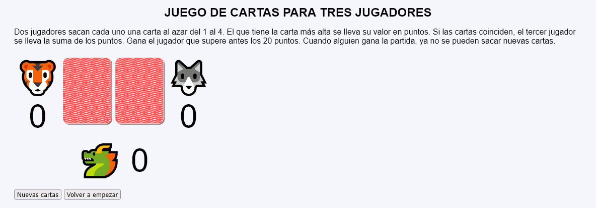
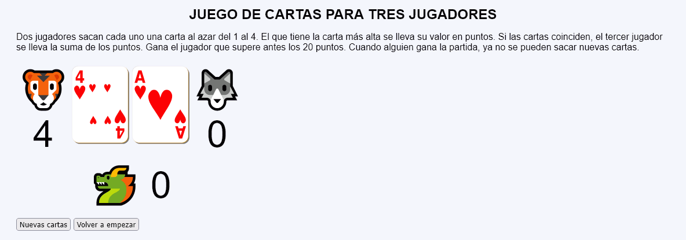
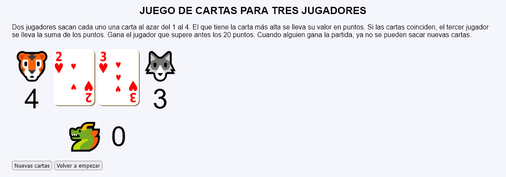
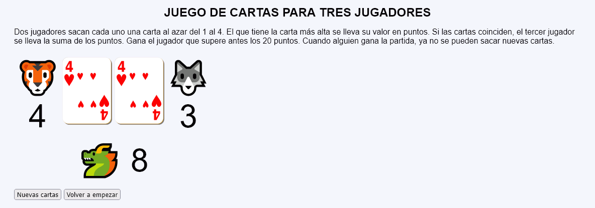
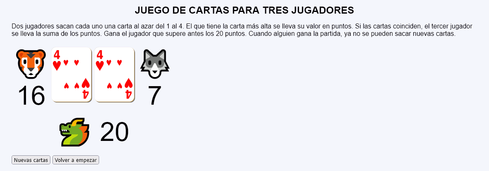
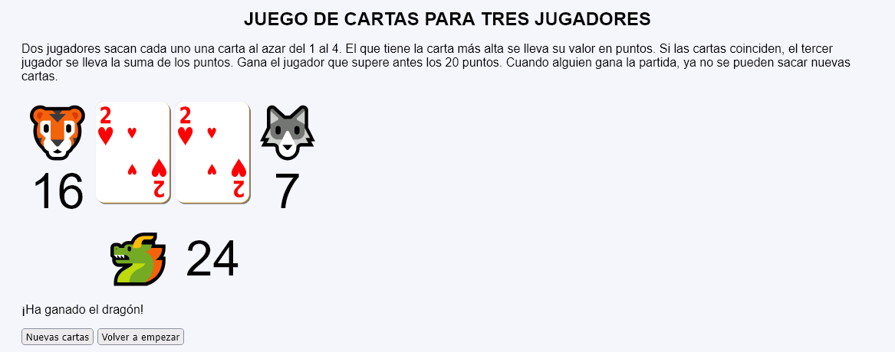

En este ejercicio se debe crear un programa que permita jugar una partida de un juego de cartas para tres jugadores.






<table style="font-size: 2rem; text-align: center;">
<tr style="font-size: 4rem;">
<td>🐯<br>16</td>
<td><img src="img/cartas/c2.svg" alt="2 de corazones" width="100"></td>
<td><img src="img/cartas/c2.svg" alt="2 de corazones" width="100"></td>
<td>🐺<br>7</td>
</tr>
<tr style="font-size: 4rem;">
<td></td>
<td colspan="2">🐲 24</td>
<td></td>
</tr>
</table>
<p>¡Ha ganado el dragón!</p>